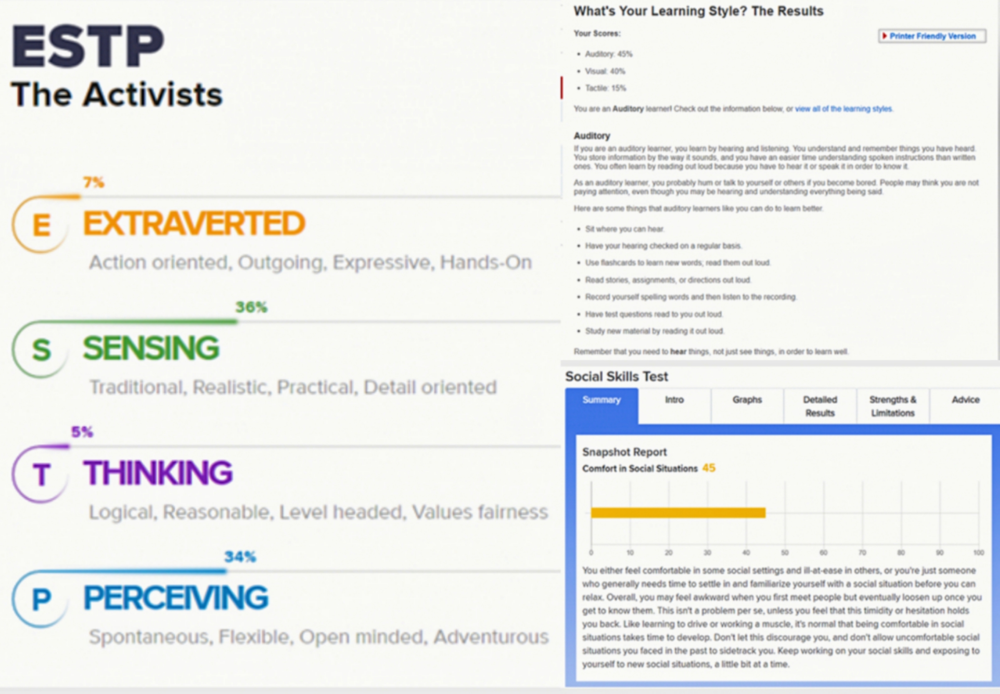

Overview
The project will be a game that include VR technology, traveling and learning elements. It can help people who are disability or do not have enough time to go outside, it can also help people to remember the scene about to disappear. By the way, it can also Save people from the pain of passive learning methods. With the 3D modeling technology, this project can solve the problems of danger, congestion, and inconvenience in tourist attractions, satisfy some people’s desire to open their eyes and make people want to learn some relevant knowledge. We can visit the past or design the future through projects.
Motivation
Over time, some places full of memories have changed their appearance. Many years ago, people invented cameras in order to keep their minds in mind. Later, with the development of VR technology, I came up with the idea of immersive photos, which I might add Sensory and dynamic elements, because some feelings can’t be found in photos and videos, so can we find them in a more advanced way? I think it is possible. We should not be limited to the 2D of the camera, but keep life and stories from a higher dimension, and even experience the future.
Description
The inspiration of this project comes from the innovation of photography technology. I am passionate about making people have a better life experience through technology. After more than a hundred years of development, photography has become commonplace in our lives, but we must pursue better For example, let yourself feel the same. In order to keep the past, we have a camera, plus the size of time, someone invented the audio tape. Therefore, our project draws on these things, can we upgrade the photography technology so that the photos do not stay in two dimensions? Or what we recorded through cameras, such as a football match, can we use some tools and technology to make people truly feel the atmosphere of sitting in the audience watching the game? With the development of modern technology, this is Possibly. We save the scene we want to keep through a new input device. Because it is an all-round recording, the principle of the camera does not seem to be suitable. This requires 3D scanning technology to realize the storage of the scene. At the same time We also need to record 3D surround sound in order to achieve all-round video recording. After digital processing, users can experience this new way of viewing like watching videos. In the past, we could record life with cameras. Through this project, we Trying to develop a new hardware device to record the immersive feeling, and through the output device so that we can feel the same at any time. At the same time, we can use this project to help people learn better such as history, human geography. We may be tired of The learning method of acquiring knowledge from books, so we can install the most realistic scene experiments or folk life into the storage device. This project can also provide editing functions, like Minecraft, edit the space at will, and optimize the popularization of input devices After that, users can share their own works like sharing pictures and videos, or share their remodeled space. In other respects, it can also help some people with limited mobility to travel around the world without encountering crowded The problem and the inconvenience of the journey, this second you can stand on the East African prairie and watch the lion hunting, the next second you can stand on the Antarctic ice and watch the penguins hug and warm up. Again, this is not the same as watching a nature show. You can feel an elephant stepping on the grass behind you, and you can also hear the cold Antarctic wind blowing by your ears. With the continuous accumulation of materials, it is expected that a complete system covering the entire world can be realized, or we need a large number of voxel blocks to assemble the entire world, and add different sound elements through coordinate positioning, or copy the experience of tactile elements High temperature or cold wind. However, there are still differences between virtual and reality. We can only try to get as close as possible instead of copying 100%.
Tools and Technologies
The tools and Technologies like 3D scanning or a new type of scanning camera that can catch the shape and color of scenes. For users only need something like VR glasses and a cup of coffee to enjoy and visit the amazing scenes at home. We can also use built-in tools to change the space, so a powerful physics engine is needed here, Unity may achieve this. Because the pixel requirements for scene restoration are very high, we need powerful cloud storage space and fast data transfer. Of course the stereo sound technology has been realized, it is also a important part.
Skills required
Software:
Digital 3D model, Stereo surround technology, VR technology.
Hardware:
Shape and color panoramic scanning equipment, VR glasses, Large capacity server.
The input device uses infrared scanning technology and stereo collection technology,
The output device can learn from VR glasses and stereo surround sound headset.
Requires proficiency in VR technology.
Enough design experience is required to give users a comfortable experience.
Outcome
If this project is successful, a new way of recording life will become popular, or a new way of traveling or watching a game. On this basis, more sensory experiences will be developed. On the other hand, we can watch some dangerous experiments more clearly. Maybe the zoo will close down because we can get closer to nature through this project.This project will affect many industries, such as tourism and photography. At the same time, faster data transmission will be required. The original problem will be solved with the accumulation of users and materials, the huge database will support the development of the project.